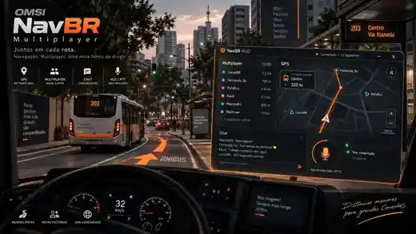

Multiplayer externo
Sala, presença, telemetria, jogadores no GPS/minimapa/HUD do NavBR, chat, voz e reconexão automática.
- Host no PC do criador
- TCP 27730 / SignalR
- Mapa + fingerprint compartilhados
- Servidor dedicado opcional
GPS, HUD, mapa compartilhado, sala hospedada pelo próprio criador, chat e voz em um aplicativo independente da Steam. A integração física com outros ônibus dentro do OMSI está sendo desenvolvida separadamente.

Contribuições ajudam diretamente no desenvolvimento, testes entre computadores, compatibilidade com mapas/ônibus, infraestrutura e evolução do multiplayer visual.
O NavBR já troca telemetria entre jogadores e mostra os remotos na própria interface. A representação física no mundo 3D do simulador é a próxima fronteira técnica e continua experimental.

Sala, presença, telemetria, jogadores no GPS/minimapa/HUD do NavBR, chat, voz e reconexão automática.
O NavBR ainda não cria outro jogador como ônibus físico/AI dentro do cenário do OMSI.
Plugin x86 opcional, Named Pipe local, heartbeat, filtro por mapa, estados remotos e interpolação antes de qualquer entidade física.
Consultando as releases publicadas no GitHub.
Para jogar, entrar em salas ou criar sua própria sala. É self-contained e não exige baixar o servidor dedicado.
Mesmo cliente em pasta completa. Use se preferir uma distribuição extraída ou precisar diagnosticar arquivos.
Somente para executar o host separado do cliente. Não é necessário no modo peer-host normal.
Carregando releases…
Roadmap real do mapa, posição, heading, zoom de até 10×, rota ativa, destino e próxima parada quando disponíveis.
Minimapa móvel, chat visual, atalhos, contador de jogadores e indicador de voz.
Quem cria a sala hospeda a sessão no próprio PC. Servidor dedicado continua como alternativa.
NAudio + Concentus, 48 kHz mono, frames de 20 ms e push-to-talk configurável.
F9/F10 e modificadores são comparados com o keyboard.cfg real do OMSI antes de serem ativados.
O NavBR encontra o Omsi.exe em execução e deriva a instalação diretamente do processo.
A rede já leva telemetria entre computadores. No destino, esses dados alimentam a interface do NavBR; na alpha.10 eles também podem chegar ao plugin experimental para diagnóstico.
Importante: a seta ainda termina no registro/diagnóstico do plugin. Ela não termina em um segundo ônibus renderizado pelo OMSI.
O NavBR lê a instalação real do mapa. O fundo recomendado do GPS é texture\map\whole.roadmap.bmp; a rota vem de TTData, tiles, splines, paths e objetos do mapa.
global.cfg e tiles permitem ao NavBR catalogar a instalação.
whole.roadmap.bmp fornece o fundo 2D do GPS.
.ttp/.ttr, splines e paths alimentam o traçado detalhado quando resolvíveis.
Mapa e fingerprint ajudam a separar jogadores compatíveis, mas não criam ônibus físicos no OMSI.
O cliente inicia ASP.NET Core + SignalR localmente e o criador entra automaticamente na própria sala. O servidor dedicado é apenas uma opção adicional.
O NavBR abre o host em TCP 27730 e gera os dados de convite da sessão.
Presença, telemetria, mapa/fingerprint, chat e voz trafegam pelo host.
Jogadores compatíveis podem ser desenhados no GPS/minimapa/HUD com suavização.
Ainda não implementado. Esta etapa depende da validação do plugin e de uma estratégia segura de veículo AI/instância equivalente.
A integração x86 é opcional. O objetivo atual é provar carga, heartbeat e transporte seguro dos estados remotos antes de qualquer tentativa de entidade física.
Snapshot de teste separado da alpha.9. Inclui cliente standalone, plugin completo, instalador/removedor e checklist.
DLL + OPL com callbacks do OMSI e log de heartbeat. Não cria nem move veículos nesta fase.
Bridge local restrito ao usuário atual, com handshake, reconexão e mensagem de status de volta ao cliente.
install, PID, process-match, heartbeat, callbacks, mapa, fingerprint e remotos compatíveis.
Máximo de 64 estados remotos, validação de dados, remoção explícita e timeout para evitar estados fantasma.
Snapshots remotos já podem ser suavizados antes de uma futura camada de representação física.
Veículo AI/instância equivalente, com fallback de modelo. Sem patch/injeção para forçar uma API de spawn inexistente.
install=INSTALLED, status=CONNECTED, process-match=YES, heartbeat=LIVE e bridge estável entre dois PCs.Builds automatizados validam compilação, pacotes, EXE, bridge e instalador. HUD, rota, próxima parada, rede entre PCs, voz, atalhos e plugin continuam dependendo de testes reais no simulador.
Relatos reais de mapas, redes, ônibus e versões do OMSI são parte importante do desenvolvimento.
Informe versão do NavBR, OMSI, mapa, passos para reproduzir e logs quando possível.
Envie ideias para HUD, navegação, multiplayer, plugin, chat, voz, instalação ou site.
Conte o que funcionou, o que precisa melhorar e qual área deveria receber prioridade.
Os relatos são públicos no GitHub. Não publique senhas, tokens ou dados privados nos formulários e anexos.
Alpha.9: HUD, rota, peer-host, chat e voz. Alpha.10: lista de roadmaps, plugin, bridge e heartbeat.
Confirmar carga x86, PID correto, callbacks, heartbeat e transporte remoto entre dois computadores sem crash.
Investigar veículo AI/instância equivalente, posição/orientação, remoção segura e compatibilidade/fallback de modelo.
Portas, luzes, setas, matriz, articulação, LOD, otimização de rede, NAT traversal e recursos de beta.